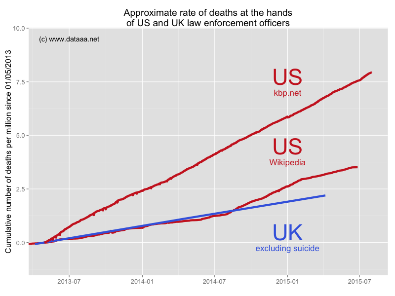

Police deaths in the UK (another approach)
After yesterday's discovery that the adjusted rate of deaths following contact with the England & Wales police forces was higher than that in the US, I set out to try to verify this information. As I stated yesterday, there is no systematic, reliable record of deaths caused by the police in the USA, and any attempts to start such a record have not been supported by individual police departments.
I found a website called www.killedbypolice.net, where some diligent person or persons have been recording police-caused deaths since 1 May 2013. Each reported death is backed up by a link to a media website. After much wrangling (much messy HTML!) I extracted this information using R and plotted it with my previous data, this time just for the period from 1 May 2013 until today (normalising as necessary).

This view paints a different picture: it shows that the death rate for English & Welsh police is similar to that reported on Wikipedia for US police. It also shows that there are more than twice as many killings reported on killedbypolice.net as on Wikipedia. 4.6 more people per million have been killed by US police compared to UK police, over the last two years, and you are more than three times as likely to be killed by a police officer in the US than in the UK.